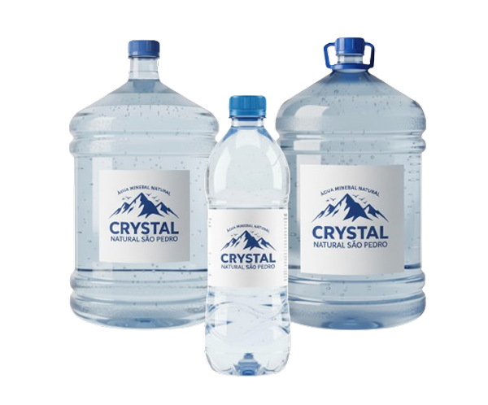

Conheça um pouco mais a CRYSTAL

CRYSTAL – Pura como as montanhas A CRYSTAL nasceu com o compromisso de oferecer uma água mineral de excelência, preservando ao máximo sua pureza natural. Disponível em diferentes formatos para atender ao seu dia a dia, temos a garrafa de 500ml, prática e perfeita para levar em qualquer ocasião; o galão de 10 litros, ideal para famílias e pequenos ambientes; e o galão de 20 litros, pensado para quem busca maior durabilidade e economia. Com a CRYSTAL, você garante hidratação saudável, frescor e confiança, sempre com responsabilidade ambiental e cuidado em cada detalhe.
